These parts represent 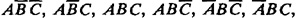 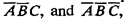 respectively. For each division, the two corresponding entries in the table are added to determine the length of the divisions. Dotted vertical lines are drawn to divide the next level also into eight parts.
These parts represent 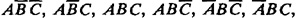 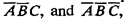 respectively. For each division, the two corresponding entries in the table are added to determine the length of the divisions. Dotted vertical lines are drawn to divide the next level also into eight parts.| Previous | Table of Contents | Next |
The third level is divided into eight parts marked These parts represent 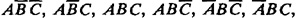 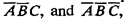 respectively. For each division, the two corresponding entries in the table are added to determine the length of the divisions. Dotted vertical lines are drawn to divide the next level also into eight parts.
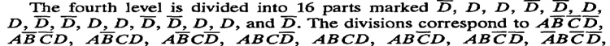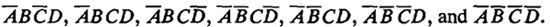 The single entry corresponding to each of these combinations is used to determine the length of the division. At this point, you can cross check that the lengths of divisions at level C correspond to the sum of its two subdivisions at level D. Similarly, lengths at level B and A can be verified.
Now the final chart is drawn with all segments drawn to scale. The segments corresponding to a “1” value, that is, A = 1, B = 1, C = 1, or D = 1, are drawn with solid lines. The final Gantt chart for this example is shown in Figure 10.16. Notice that the marking at each level is such that the number of line segments is minimized.
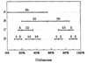
FIGURE 10.16 Final Gantt chart.
A Kiviat graph is a visual device that helps system managers quickly recognize performance problems. It is a circular graph in which several different performance metrics are plotted along radial lines. In the most popular version of the graph, an even number of metrics are used. Half of these metrics are HB metrics (see Section 3.4) so that a higher value of the metric is considered better. The other half of the metrics measure are LB metrics, and a lower value is considered better. For example, CPU utilization is an HB metric because a higher utilization implies that the resource is being used. The percentage of time the CPU is waiting for I/O completion (CPU in a wait state) is an LB metric, and it would be better to have as little wait state time as possible. The HB and LB metrics are plotted along alternate radial lines in a Kiviat graph. In an ideal system, all HB metrics should be high and all LB metrics should be low. In other words, the Kiviat graph for an ideal system is a star. The following example illustrates the ideas discussed so far.
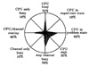
FIGURE 10.17 Kiviat graph for the sample data.
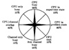
FIGURE 10.18 Star—Kiviat graph for a balanced system.
The main reason for the popularity of Kiviat graphs over the popular Gantt chart form was the easy recognition of patterns by the system managers. In the 1970s, when the Kiviat graphs were first introduced, a number of commonly occurring shapes were given interesting names such as CPU keelboat, I/O arrow, and so forth. Figures 10.19 to 10.21 show these popular patterns. Figure 10.19 shows a CPU-bound system that has a high CPU utilization with very little I/O usage. The Kiviat graph for this system looks similar to a keelboat, and hence the pattern was dubbed CPU keelboat. Figure 10.20 shows an I/O-bound system with high I/O utilization and low CPU usage. Due to the wedge shape of the graph, it is called I/O wedge. Finally, Figure 10.21 shows the so-called I/O arrow and represents a system that uses considerable I/O as well as CPU.
Given two Kiviat graphs, it is easy to tell which system is more balanced by looking at their shapes. However, if a quantitative measure of the goodness of a graph can be designed, it will not be necessary to plot it. A number of such figures of merit have been proposed. The most popular one is due to Merrill (1974, 1975). He proposed that the LB axes be reversed so that 0% is plotted along the circumference while 100% is plotted at the center; the square root of the area of this reversed Kiviat graph could be used to compare the overall goodness of systems. Consider a Kiviat graph with 2n axes. Let the percentage of performance values for a system be {x1, x2, x3, . . .,x2n}, where the odd values x1,x3, . . .,x2n–1 represent good metrics and the even values x2,X3, . . .,X2n represent bad metrics. All xi’s are percentages and lie between 0 and 100. Merrill’s Figure Of Merit (FOM) is computed as follows:
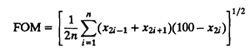
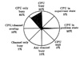
FIGURE 10.19 CPU keelboat—Kiviat graph for a CPU-bound system.
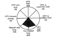
FIGURE 10.20 I/O wedge—Kiviat graph for an I/O-bound system.
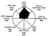
FIGURE 10.21 I/O arrow—Kiviat graph for a CPU-and I/O-bound system.
| Previous | Table of Contents | Next |
){kind=link}
){kind=link}
){kind=link}
){kind=link}
){kind=link}
){kind=link}
){kind=link}
){kind=link}
){kind=link}
){kind=link}
){kind=link}
){kind=link}